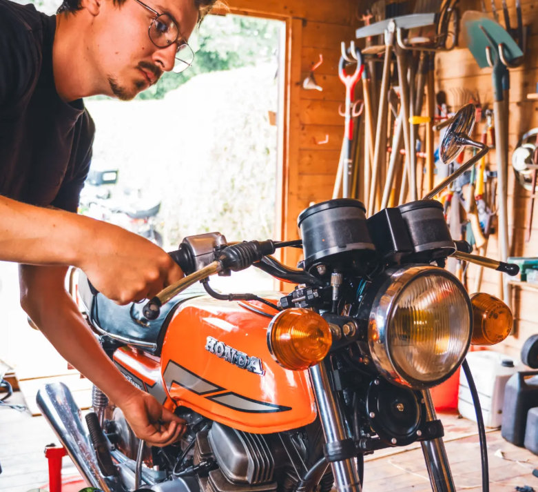

Vente
Des motos sélectionnées une à une, contrôlées à l'atelier, et un conseil honnête pour choisir celle qui vous ressemble.
Vente, entretien et réparation de motos à Plouguerneau
Des motos sélectionnées une à une, contrôlées à l'atelier, et un conseil honnête pour choisir celle qui vous ressemble.
Toutes marques. Révisions, diagnostics, remises en état : chaque intervention est faite avec méthode et expliquée clairement.
Un accompagnement personnalisé pour chaque motard, du premier achat aux projets de préparation.

Derrière Côte et Cylindre, il y a Timothée Draghi : un mécano formé chez Honda, qui connaît les motos côté atelier comme côté vente.
Timothée a d'abord été mécanicien chez Honda, puis commercial pour la marque. Deux métiers qui lui ont appris la même chose : on conseille bien une moto quand on sait exactement comment elle fonctionne, et on la répare bien quand on écoute celui qui la conduit.
Passionné d'auto et de moto, il a passé des années aux côtés de Remise sur Route, une association de restauration de véhicules anciens dans les Yvelines. Démonter, comprendre, remettre en état : c'est là qu'il a pris le goût des mécaniques qu'on fait revivre.
Aujourd'hui à Plouguerneau, il met cette double expérience au service des motards du Finistère nord, avec le même soin pour une moto récente que pour une ancienne à remettre sur la route.
Entre les abers et la mer, un atelier où l'on prend le temps de bien faire.
À Plouguerneau, au bout du Finistère nord, Côte et Cylindre est né d'une passion simple : la moto, et le plaisir du travail bien fait. Ici, chaque machine est traitée comme si c'était la nôtre.
Un réglage juste, une pièce choisie avec soin, un serrage vérifié deux fois. C'est dans ces détails que se joue la confiance, et c'est ce qui vous permet de reprendre la route l'esprit tranquille, qu'il vente sur la côte ou que le soleil tape sur les petites routes bretonnes.